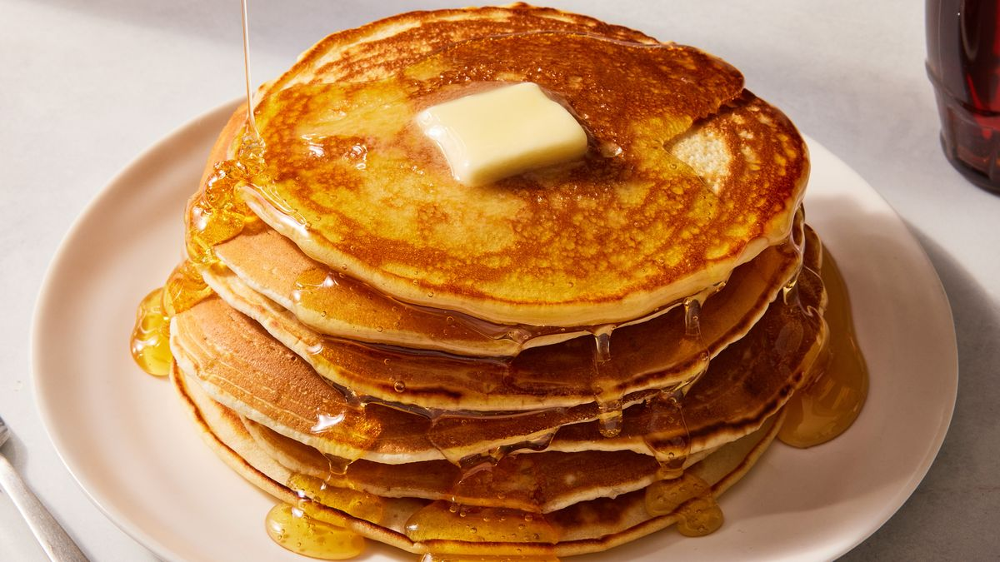

Pancakes

Description
This is a classic pancake recipe that results in fluffy, light pancakes perfect for a hearty breakfast.
Ingredients
- 1 cup all-purpose flour
- 2 tablespoons sugar
- 1 tablespoon baking powder
- 1/2 teaspoon salt
- 1 cup milk
- 1 egg
- 2 tablespoons melted butter
Steps
- In a large bowl, whisk together flour, sugar, baking powder, and salt.
- In another bowl, beat the milk, egg, and melted butter together.
- Pour the wet ingredients into the dry ingredients and stir until combined.
- Heat a lightly oiled griddle or frying pan over medium-high heat.
- Pour or scoop the batter onto the griddle, using approximately 1/4 cup for each pancake.
- Cook until bubbles form and the edges are dry, about 2-3 minutes, then flip and cook until browned on the other side.